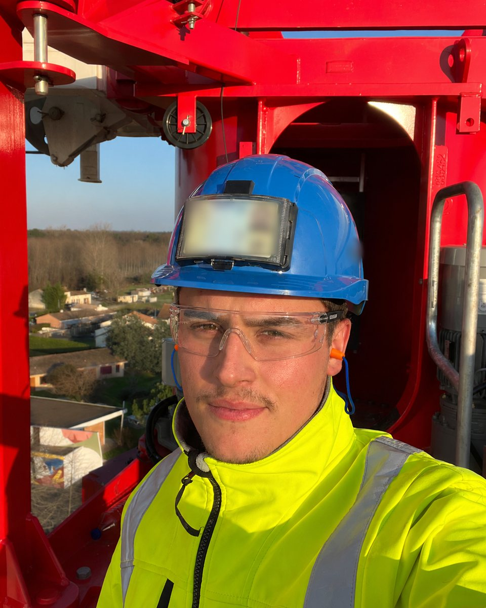
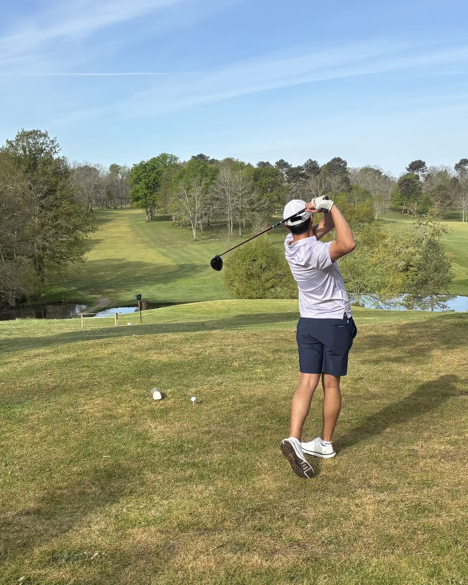
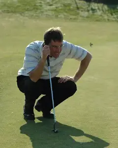

Golfeur amateur et ingénieur travaux
329e
actuellement au Mérite National Amateur, avec un index de −3,2.

- Mérite National Amateur
- 329e
- Index
- −3,2
- Tournois sur 12 mois
- 15
- Équipe 2027 : La Prée La Rochelle
- 2e division
Golfeur et ingénieur travaux
Je suis né à Bordeaux et je joue au Golf de La Prée La Rochelle. Je suis ingénieur travaux, formé au CESI, et je mène ma saison de compétition en parallèle.
Je ne cherche pas à vivre du golf. Je mène deux projets de front avec la même méthode : entraînements calés sur un emploi du temps professionnel, saison planifiée et budgétée un an à l'avance, logistique et financement gérés de bout en bout.
La saison 2026 m'a permis d'évoluer : mon jeu, mes résultats et mon classement ont nettement progressé.

Mes valeurs
- Rigueur
- Concentration
- Stratégie
- Persévérance

Mes résultats
| Date | Compétition | T1 | T2 | T3 | Place |
|---|---|---|---|---|---|
| Chargement des résultats… | |||||
Source : Mérite National Amateur, ffgolf, édition de novembre 2026.
Bilan de la saison 2026
Mes trois fiertés de la saison.
- 2deuxièmes places en Grand Prix, à La Prée La Rochelle et aux Tumulus
- 2e divisionla montée en 2e division nationale avec l'équipe du Golf de La Prée La Rochelle
- +622places gagnées au Mérite National Amateur
Et 2027 ?
Mon programme de la saison 2027 est en cours de réflexion. Il sera publié ici dès qu'il sera arrêté.
Mon équipe
Les personnes qui m'accompagnent au quotidien.
-

Yves Petit DubousquetCoach diplômé PGA France, volet technique - Aurélie RayetPréparation mentale et psychologie de la performance
- AS Golf de La Prée La RochelleCompétitions par équipes
Les entreprises qui m'accompagnent
Vous vous retrouvez dans ces valeurs ? Particulier ou entreprise, n'hésitez pas à m'accompagner dans l'aventure. Me contacter
M'accompagner dans la saison 2027
Vous souhaitez m'accompagner dans ma saison 2027 ? Que vous soyez un particulier, une entreprise ou une marque, prenons contact : nous trouverons ensemble la façon de le faire qui vous correspond, qu'il s'agisse de matériel, d'un soutien sur les déplacements, d'une mise en relation ou d'un partenariat.
Me contacter
Une question, une proposition, l'envie de suivre ou de soutenir ma saison : laissez-moi un message, je vous réponds sous 48 heures.